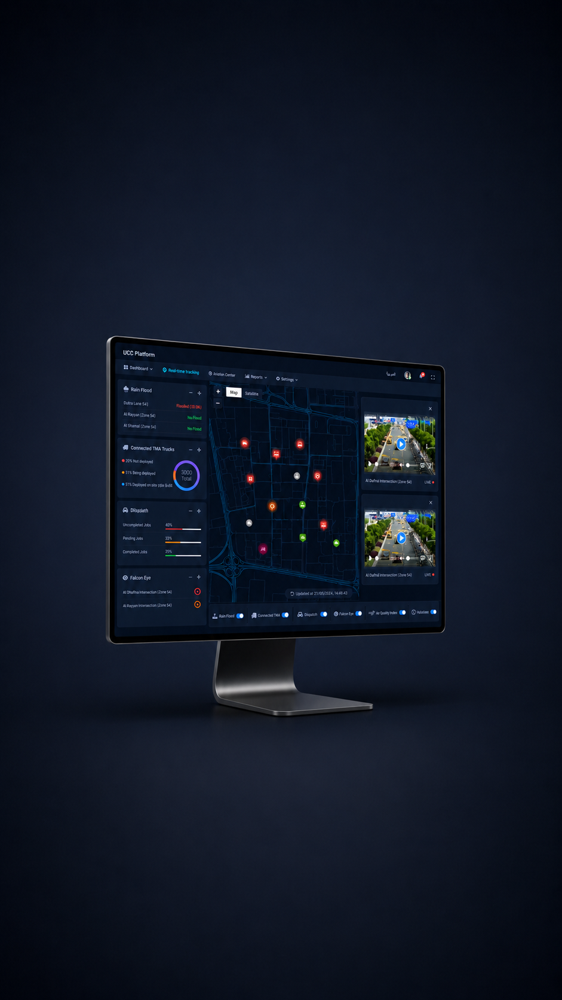
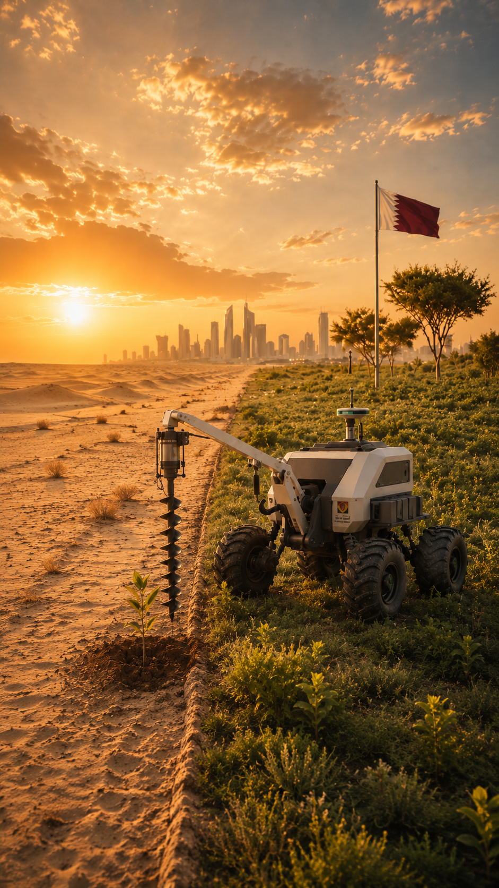
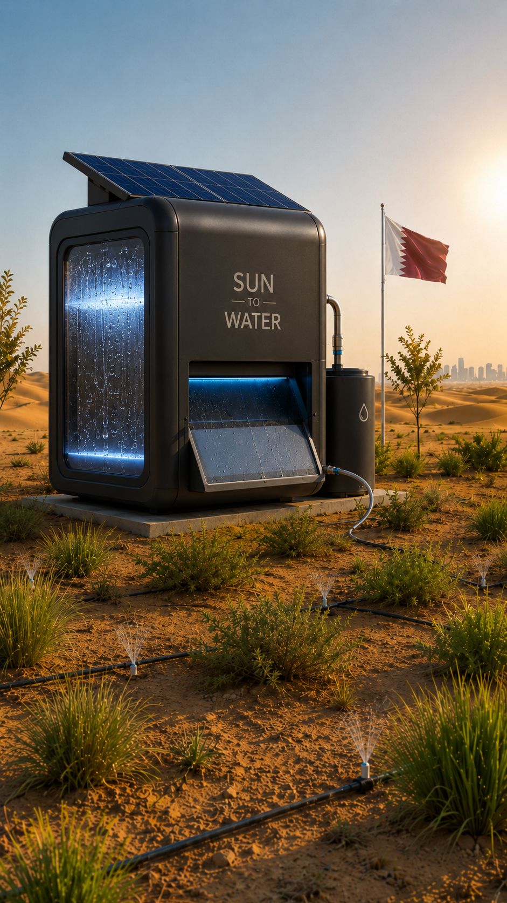
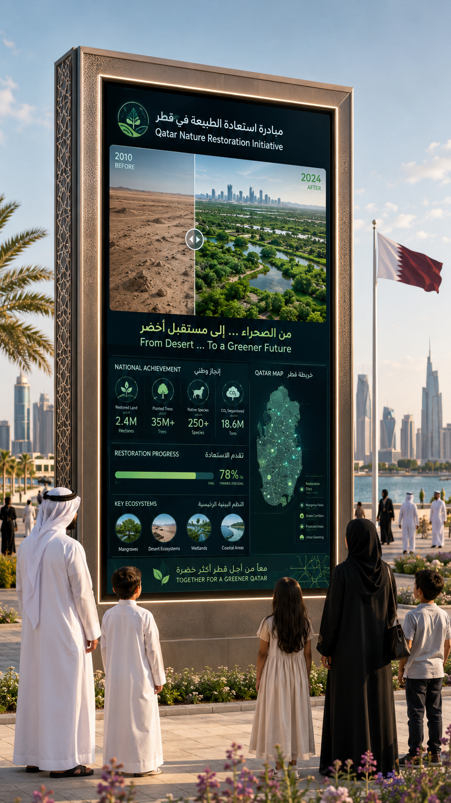

Desert Planting Rover
Drills small holes, places seed pods or seedlings, injects measured water, and records each GPS point.
UCC is QMIC’s gateway to ministry operations — a unified platform that brings existing systems, portals, sensors, maps, alerts, dashboards, assets, cameras, and operational workflows into one place.
This allows QMIC to engage ministries immediately using existing capabilities. On top of this foundation, robotics, autonomous sensing, smart seeding vehicles, AWG-supported irrigation, and field execution systems can be introduced as the Tech 5.0 roadmap after approvals, pilot zones, and ministry priorities are confirmed.
The immediate opportunity is not to wait until robots are built. QMIC can start ministry engagement using UCC as a unified monitoring gateway, then position robotics as the Tech 5.0 execution layer that requires approval, piloting, and phased deployment.
Unify existing portals, live sensor data, GIS, dashboards, reports, cameras, alerts, assets, and operational decisions in one place.
Identify systems, data sources, sensors, priority use cases, pilot zones, stakeholders, approvals, and budget path.
Introduce planting rovers, sensing assets, monitoring robots, AWG support, and autonomous field operations as a future roadmap.
UCC can act as the ministry gateway by integrating QMIC technology, existing ministry portals, field systems, sensors, cameras, assets, alerts, and operational workflows into one unified place.

AI should not be presented as a separate product. It is part of the UCC evolution, using live and historical data to improve decisions, prioritize operations, and prepare missions for field assets.
Unified portals · GIS · dashboards · reports · alerts · live sensors · humidity and environmental data · cameras · assets · risk ranking · predictive alerts · recommendations · mission planning
Planting rovers · smart seeding vehicle · monitoring rover · sensor poles · AWG support · autonomous inspection · field execution

Use the ministry initiative as a management-ready story for UCC monitoring today and future robotic execution after approvals.
The strongest starting point is practical field equipment, not a humanoid robot. Start with supervised assets that can be approved, tested, and integrated with UCC.
Drills small holes, places seed pods or seedlings, injects measured water, and records each GPS point.
Buggy/UTV with seed hopper, GPS, soil sensors, water tank, and operator supervision.
Returns after planting to inspect growth, moisture, damage, survival, and replanting needs.
Fixed sensing stations to monitor heat, humidity, soil, growth, intrusions, and field conditions 24/7.
Robotics can be introduced gradually: first proving the planting action, then piloting supervised field systems, and later scaling toward advanced autonomous restoration platforms. This keeps UCC as the operational foundation while showing a realistic Tech 5.0 roadmap.
These examples show the basic mechanical actions: drilling, placing seeds, or supporting semi-manual planting. This level is useful for early validation before investing in larger field systems.
These are closer to a Qatar pilot because they combine mobility, field equipment, sensors, positioning, and operator supervision. This is the most realistic starting level for controlled testing.
This level represents the long-term roadmap: autonomous mobility, robotic arms, intelligent planting, mission execution, and integration with national environmental operations platforms.
Advanced robotics reference showing the future direction for autonomous planting, sensing, and field execution after approvals, testing, and training.
For Qatar, the practical story is supplemental smart irrigation, not replacing all water infrastructure. Atmospheric water generators can support pilot zones by extracting water from humidity, storing it locally, and reporting usage into UCC.

A public-facing tracker can show progress, transparency, and QMIC’s contribution — not just the internal operations platform.

This approach allows QMIC to start with practical integration today while positioning the company for the next technology wave: robotics-enabled field operations.
Unify existing portals, systems, data, sensors, alerts, reports, and operational workflows.
Move beyond portals and apps into robotics-enabled field execution.
Public progress website shows measurable achievements year after year.
The same UCC gateway can support environment, municipalities, agriculture, ports, civil defense, and infrastructure.
Use UCC as the immediate ministry conversation, then move into use case approval, robotics scoping, pilot design, and phased delivery.
Approach the ministry using UCC as the unified monitoring gateway; identify systems, portals, sensors, and operational needs.
Confirm the 10M trees use case, define robotics scope, approvals, data access, pilot zone, and success metrics.
Build UCC monitoring module, public tracker concept, robotics/AWG concept, and integration workflow.
Deploy supervised rover/vehicle in a controlled zone, monitor results, then scale by zones and publish yearly progress.